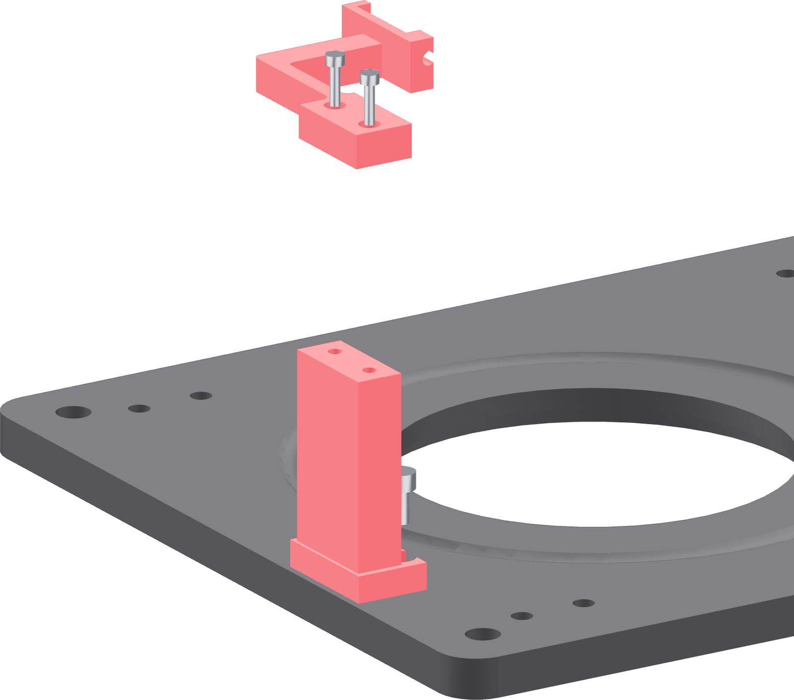

The ground tower and arm
A stationary post at the far left of the base, and a replaceable leaf spring on top of it. This is what keeps the welder's work lead still while the vessel turns.

- Set the ground tower on the two M5 stations at the left edge of the base, its fork end pointing at the tube axis.
- Drive two M5 × 10 socket-head screws with the 4 mm hex. Hand-tight into brass.
- Lay the flexure arm on the tower's top face, leaf pointing toward the tube axis, and line its two holes up with the tower's two inserts.
- Drive two M3 × 12 at 0.5 N·m.
- Push the leaf sideways with a finger. It should deflect and spring straight back with no creak and no visible layer line opening.
Gate — the leaf is sound
It bends in plane and returns. A whitening line, a crack, or a crunch when it flexes means the print delaminated — this part is 100% infill for exactly that reason, and a failed one is a five-minute reprint.